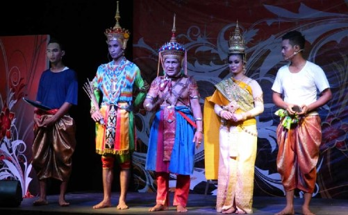
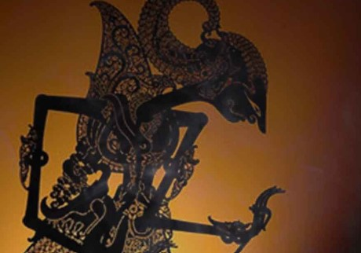
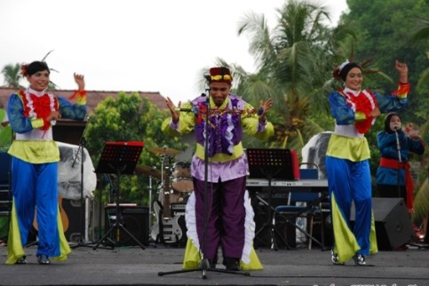

Theatre
Menorah
Javanese Skin Puppets
Randai Traditional Theatre

Boria
Nobility Traditional Theatre

Malaysia has a variety of Traditional Music, including sape, kompang......
Many traditional dances in Malaysia are very interesting, such as......